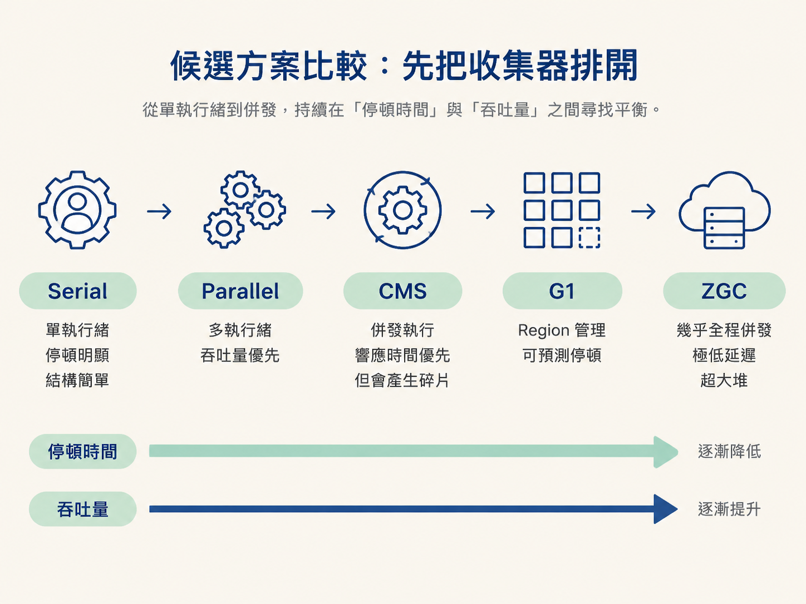
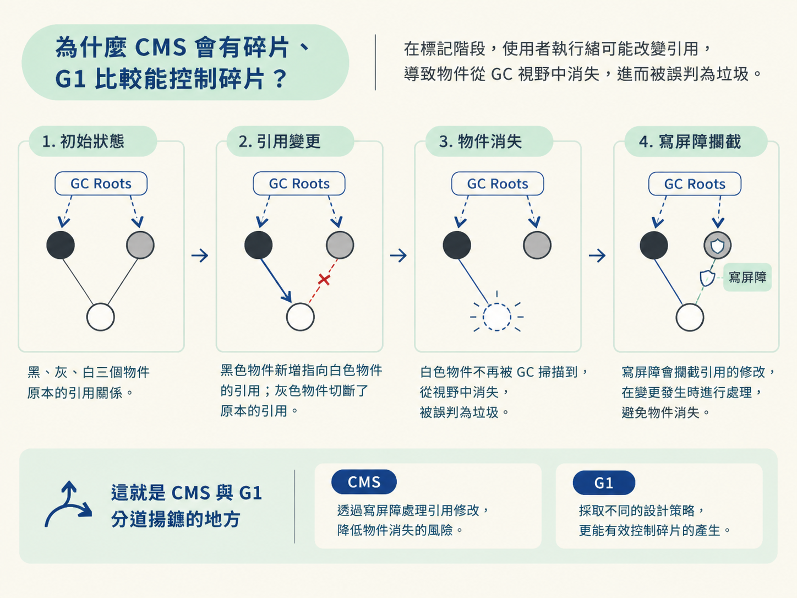
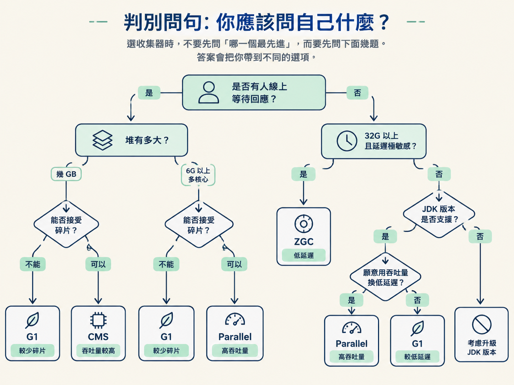
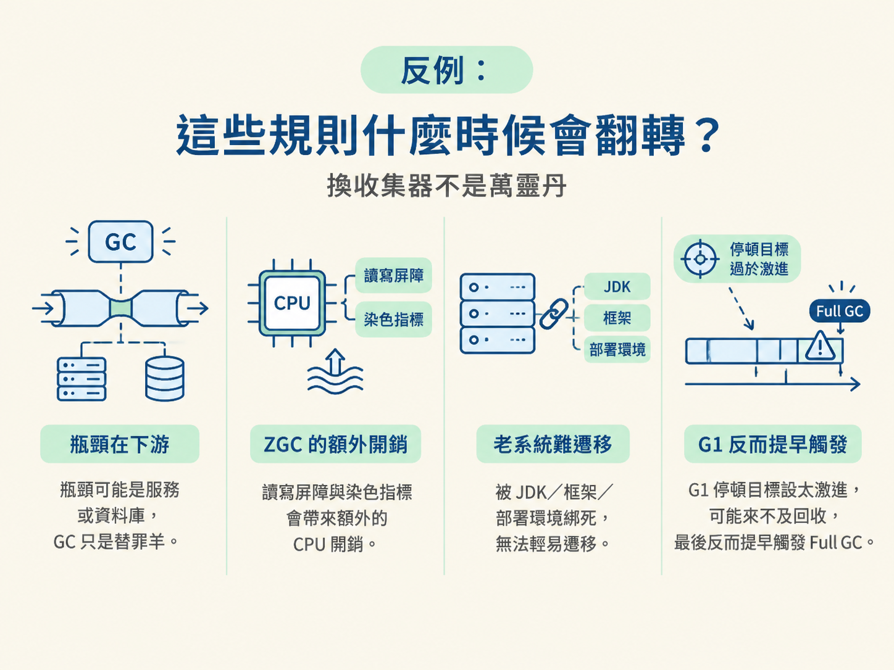

線上服務突然出現 GC 頻繁、回應變慢的告警時，第一個念頭通常是：「要不要換一個垃圾收集器？」但 JVM 裡從 Serial、Parallel、CMS、G1 到 ZGC，每一個都有自己的代價。選錯了，可能只是把問題從停頓時間換成 CPU 開銷，或從吞吐量換成碎片。
這一節不談「哪個收集器最強」，要談的是「什麼條件下該選哪一個」。你會先看到候選方案排開比較，接著用幾個判別問句做選擇，最後看這些規則什麼時候會失效。搞懂三色標記與寫屏障之後，你也說得出 CMS 為什麼會留下碎片，以及 G1 怎麼讓停頓時間更可控。
學完後，你應該能依照吞吐量或延遲目標，在 Serial、Parallel、CMS、G1 與 ZGC 之間做選擇，並解釋它們在碎片與停頓控制上的底層差異。
這些收集器大致沿著一條演進路線走：最早是單執行緒、停頓明顯但結構簡單；接著是多執行緒、以吞吐量為主；再往後，就是讓 GC 跟應用程式併發執行、想辦法把延遲壓下來的方案。

| 收集器 | 型態與目標 | 核心特徵 | 適用場景 |
|---|---|---|---|
| Serial + Serial Old | 單執行緒，STW | 結構簡單，單核心下沒有額外的執行緒協調負擔 | 記憶體很小的用戶端應用；伺服器端幾乎不用 |
| Parallel Scavenge + Parallel Old | 多執行緒並行，吞吐量優先 | JDK 8 預設，目標是降低 GC 佔用的總時間 | 背景運算、報表處理等互動較少的場景 |
| ParNew + CMS | 併發，回應時間優先 | GC 與使用者執行緒併發，停頓較短；但有碎片、對 CPU 敏感，且 JDK 14 已移除 | 對延遲敏感的老系統 Web 服務 |
| G1 | 併發，可預測停頓 | JDK 9 起預設；以 Region 管理堆，並可用 -XX:MaxGCPauseMillis 設定停頓目標 | 6G 以上、多核心的伺服器端應用 |
| ZGC | 幾乎全程併發，極低延遲 | 使用染色指標與讀屏障，停頓可壓在 10ms 內，且不會隨堆增大而明顯變長 | 32G 以上的超大堆，以及對延遲極度敏感的服務 |
這張表裡有三個轉折特別值得記住。
Parallel 的想法是：「可以接受單次停久一點，但不要讓 GC 反覆打斷工作。」它不追求每一次停頓都很短，而是盡量減少 GC 佔用的總時間。因此，批次工作、報表與離線計算通常比較適合它，因為沒有使用者一直在線上等回應。
CMS 是併發收集的早期代表。它讓 GC 執行緒與使用者執行緒同時執行，把單次停頓切短，所以曾經長期是老系統的常見選擇。不過，CMS 使用標記－清除，而且不搬動存活物件，久了容易留下碎片；它也會和應用程式搶 CPU。
G1 則把「希望停多久」變成可以設定的目標。它除了讓平均停頓變短，還會看每個 Region 的回收收益決定先收哪裡，所以比 CMS 更容易守住停頓上限。
CMS 和 G1 都要面對同一個難題：GC 在標記物件時，使用者執行緒並沒有停下來。GC 可能正在判斷物件是否存活，程式卻同時修改了物件之間的引用。為了處理這種「一邊盤點、一邊有人搬動物品」的情況，JVM 使用三色標記來描述物件的狀態。
每個物件會被分成三種顏色：
標記會從 GC Roots 開始。GC 先把根直接指向的物件塗成灰色，再反覆取出灰色物件，將它指向的子物件塗灰，最後把自己塗成黑色。當灰色集合清空時，仍然是白色的物件就會被視為垃圾。
麻煩在於，使用者執行緒可能在標記途中改變引用，造成所謂的物件消失。想像一下：一個黑色物件新增了指向白色物件的引用，同時原本指向這個白色物件的灰色物件又把引用切斷。白色物件就可能從 GC 的視野中消失，明明還活著，卻被誤判成垃圾。

為了避免這種情況，JVM 會透過寫屏障攔截引用的修改。CMS 跟 G1 最主要的差別，就在它們採用了不同的處理策略。
搞懂寫屏障之後，CMS 跟 G1 的差異就不是用背的了。
CMS 採用標記－清除，而且不會把存活物件重新整理到一起。垃圾被清掉後，空間會留下大小不一的空洞。久而久之，即使堆裡還有足夠的總空間，大物件也可能找不到一塊連續空間放置，最後觸發 Full GC，帶來較長且難以預測的停頓。
G1 則把整個堆切成許多 Region。它的整體策略是標記－整理，並在局部 Region 之間使用複製，把存活物件集中到新的空間，降低碎片問題。同時，G1 會估算不同 Region 的回收收益，優先挑更值得回收的區域下手，來配合停頓目標。
選收集器時，先別問「哪一個最先進」，問下面這幾題比較實在。答案會把你帶到不同的選項。

「大堆選 G1、超大堆選 ZGC」可以當作起點，但不能當成鐵律。
如果真正的瓶頸在資料庫或下游服務，GC 可能只是被誤認的替罪羊。這時候換收集器不會讓系統變快，應該先找出真正消耗時間的地方。
ZGC 的停頓很短，卻不是沒有代價。它的寫屏障、讀屏障與染色指標都會增加額外開銷。對延遲沒有那麼敏感、但 CPU 已經吃緊的服務來說，硬換 ZGC 可能讓吞吐量下降。
老系統常常被特定 JDK 版本、框架或部署環境綁住。即使 CMS 已在 JDK 14 移除，現場仍可能有許多系統依賴它。此時貿然遷移到新收集器，升級風險可能比目前的碎片問題更大。
參數也可能把好方案調成壞方案。例如把 G1 的停頓目標設得過於激進，G1 可能來不及完成回收，最後反而提早觸發 Full GC。問題不一定出在收集器本身，也可能是目標設定跟實際的工作負載對不上。

選收集器，就是在吞吐量與延遲之間放上不同重量的砝碼：批次工作優先考慮 Parallel；需要較低延遲、又能接受舊系統限制時評估 CMS；希望停頓可預測、降低碎片時優先看 G1；超大堆且對延遲極度敏感，才考慮 ZGC。實際決策前，依序確認「有沒有人在線等回應、堆有多大、能不能接受碎片、JDK 版本是否支援，以及是否願意用吞吐量換低延遲」。CMS 跟 G1 的底層差異，可以用三色標記跟寫屏障來解釋：CMS 使用增量更新，但標記－清除會留下碎片；G1 使用 SATB，再搭配 Region 整理與回收收益估算，讓碎片與停頓都更容易控制。
到這裡，你已經能回答「該選誰、為什麼」。但系統真正上線後，告警通常不會問你「請選一個收集器」，而是一句：「服務最近 GC 很頻繁，快來看看。」下一節會把這些概念接回實戰，整理一條從告警到根因的排查路徑。